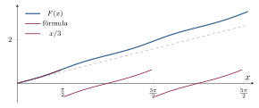
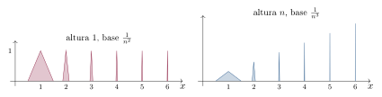
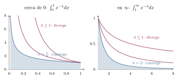
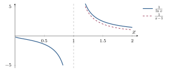
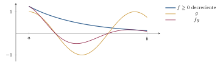
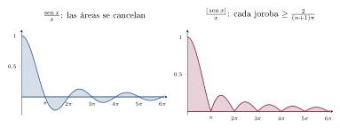
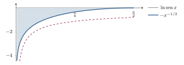
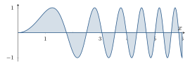
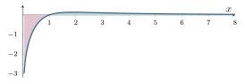

Parcial 1 · Riemann–Stieltjes e integrales impropias
Para arrancarLa trompeta de Torricelli tiene volumen finito y área infinita: se puede llenar de pintura, pero no pintar. Las integrales impropias son el lenguaje para hablar de esas rarezas sin contradicción.
Sea f∈R en [a,t] para todo t>a. Definimos ∫a∞f(x)dx=deft→∞lim∫atf(x)dx; si el límite existe (y es finito) decimos que la integral converge; en caso contrario, que diverge. Si f(x) tiene primitiva F(x) en [a,∞), ∫a∞f(x)dx=t→∞limF(t)−F(a).
Como 2+cos2t=2sen2t+3cos2t, 2+cos2tdt=3cos2t+2sen2tdt=cos2tdt⋅3+2tan2t1. Con d(tant)=cos2tdt, u=tant y v=32u, 3(1+32u2)du=3231+v2dv=611+v2dv, de modo que, para ∣x∣<2π, F(x)=∫0x2+cos2tdt=61∫02/3tanx1+v2dv=61arctan(32tanx). Pero f(t)=2+cos2t1≥31, así que F(x)≥31x para x>0, mientras que la fórmula daría ∣F(x)∣<61⋅2π para todo x. Esta contradicción se debe a que tanx no es diferenciable (ni continua) en todo R: la fórmula sólo es una primitiva en cada intervalo (kπ−2π,kπ+2π). Pegando los trozos de forma continua se obtiene, para x∈(kπ−2π,kπ+2π), F(x)=61arctan(32tanx)+6kπ, y en particular ∫0∞2+cos2tdt=∞.

La fórmula 61arctan(2/3tanx) (vino) es primitiva sólo en cada intervalo donde tanx es continua; la verdadera F (azul) se obtiene «pegando» los trozos con saltos de 6π y crece sin cota, por encima de x/3.
Si ∫a∞f(t)dt converge y g(t)≤f(t), entonces ∫a∞g(t)dt converge.
Si f,g>0 y x→∞limg(x)f(x)=K con 0<K<∞, entonces ∫a∞f(t)dt y ∫a∞g(t)dt convergen o divergen simultáneamente.
Demostraciónmostrar
1. ∫atg≤∫atf≤∫a∞f; por el Teorema 3.4, ∫a∞g converge. 2. Existe A>a tal que 2K≤g(x)f(x)≤2K para x≥A, es decir, 2Kg≤f≤2Kg en [A,∞). Por 1 y la Proposición 3.3, la convergencia de una integral implica la de la otra.
∫1∞xλdx converge si y sólo si λ>1. En efecto, si λ=1, ∫1txλdx=1−λt1−λ−1, que tiene límite λ−11 si λ>1 y tiende a ∞ si λ<1; si λ=1, ∫1txdx=lnt→∞.
Sea f continua en [0,∞). La afirmación ∫0∞f(x)dx converge⇒x→∞limf(x)=0 es falsa. Sea ∑an una serie convergente de términos positivos con an≤1. Sobre cada punto n construimos un triángulo de base an (centrado en n) y altura igual a 1, y f=0 fuera de los triángulos. Entonces f es continua, ∫0∞f=∑2an<∞, pero f(n)=1 para todo n.
Ejemplo de f(x) continua, no acotada, tal que ∫0∞f(x)dx converge: como en el caso anterior, con base nan y altura n (el área de cada triángulo sigue siendo 2an). Esta integral puede converger a cualquier número positivo (eligiendo ∑an). Así, también es falsa ∫0∞f(x)dx converge⇒f es acotada. (Sin continuidad es aún más fácil: f(x)=x si x∈N y f(x)=0 si x∈/N tiene integral 0 y no es acotada.)

Funciones continuas con ∫0∞f=∑2n21<∞ pero sin límite en ∞: a la izquierda f(n)=1 para todo n; a la derecha f ni siquiera es acotada.
Dar un ejemplo de f(x) continua en [0,∞), no acotada, con ∫0∞f(x)dx=0.
Soluciónintenta primero
Sea g(x) continua, no negativa y no acotada en [1,∞) tal que ∫1∞g(x)dx=a>0 (por ejemplo, la del Ejemplo 3.7). Sea f(x) continua en [0,1] con f(1)=g(1) y ∫01f(x)dx=−a (por ejemplo, f(x)=g(1)x−cx(1−x) con c elegido de modo que 2g(1)−6c=−a), y f=g en [1,∞). Entonces f es continua, no acotada y ∫0∞f=−a+a=0.
Si f(x) es integrable en [a,t] para todo t<b (y no es acotada cerca de b), ∫abf(x)dx=t→b−lim∫atf(x)dx. El punto b se llama punto singular. Análogamente si el punto singular es a. Las proposiciones y criterios anteriores valen sin cambios.
∫01xλdx=1−λ1x1−λ01 converge si λ<1 (y vale 1−λ1), diverge si λ>1;∫01xdx=lnx01 diverge. En resumen (con el Ejemplo 3.6): para a>0, ∫a∞xλdx converge si λ<−1, y ∫0axλdx converge si λ>−1.

Las potencias son las funciones de comparación básicas: ∫01x−λ converge sii λ<1 y ∫1∞x−λ converge sii λ>1. El caso λ=1 diverge en ambos extremos.
Sea φ:[0,∞)→[a,b) derivable con derivada continua, creciente y sobre, y f continua en [a,b). Entonces ∫0∞f(φ(x))φ′(x)dx=∫abf(x)dx, en el sentido de que una integral converge si y sólo si converge la otra, y entonces son iguales.
Demostraciónmostrar
Para t>0, por el cambio de variable en la integral propia, ∫0tf(φ(x))φ′(x)dx=∫aφ(t)f(x)dx. Como φ es continua, creciente y sobre [a,b), φ(t)→b− cuando t→∞, y φ es una biyección; luego un límite existe si y sólo si existe el otro.
Investigar la convergencia de I=∫02lnxdx,f(x)=lnx1.
Soluciónintenta primero
Como lnx1→0 cuando x→0+, el único punto singular es x=1: I=t→1−0lim∫0tf(x)dx+u→1+0lim∫u2f(x)dx. Sea φ:(1,∞)→(1,2), φ(t)=1+t1, monótona y C1, con φ′(t)=−t21 (decreciente: φ(1)=2, φ(t)→1). Entonces ∫12f(x)dx=∫∞1f(φ(t))φ′(t)dt=∫1∞t2ln(1+t1)dt. Como ln(1+t1)=t1+O(t21), t2ln(1+t1)=t+t2O(t21)=t(1+α(t)),t→∞limα(t)=0. Dividiendo por t1: 1/t1/(t2ln(1+t1))=t(1+α(t))t=1+α(t)1→1si t→∞. Por el Teorema 3.5(2), ∫1∞t2ln(1+t1)dt converge o diverge al mismo tiempo que ∫1∞tdt, la cual diverge. Luego ∫12lnxdx=+∞ e I diverge. (Directamente: lnx≤x−1, luego lnx1≥x−11 en (1,2].)

lnx1 es continua en (0,1) con límite 0 en 0+; el único punto singular de ∫02lnxdx es x=1. Como lnx≤x−1, a la derecha de 1 se tiene lnx1≥x−11, cuya integral diverge.
I converge ⟺ para todo ε>0 existe δ>0 tal que A1>A2>δ implica ∫A2A1f(x)dx<ε.
Demostraciónmostrar
Sea F(t)=∫atf. Entonces ∫A2A1f=F(A1)−F(A2), y la condición es el criterio de Cauchy para la existencia del límite finito limt→∞F(t) (que se reduce al de sucesiones: si tn→∞, {F(tn)} es de Cauchy, luego converge, y el límite no depende de la sucesión).
Para ∫abf(x)dx donde b es el único punto singular, el criterio de Cauchy se enuncia así: la integral converge si y sólo si para todo ε>0 existe δ>0 tal que b−δ<η2<η1<b implica ∫η2η1f(x)dx<ε. La demostración es la misma.
Si ∫a∞∣f(x)∣dx converge, entonces ∫a∞f(x)dx converge.
Demostraciónmostrar
∫A1A2f(x)dx≤∫A1A2∣f(x)∣dx, y el lado derecho es menor que ε para A2>A1>δ, por el criterio de Cauchy aplicado a ∣f∣. Concluimos por el Teorema 3.13.
3.4 Segundo teorema del valor medio. Criterios de Abel y Dirichlet
Sea f(x)≥0 decreciente en [a,b] y g(x) integrable en [a,b]. Entonces existe ξ∈[a,b] tal que I=∫abf(x)g(x)dx=f(a)∫aξg(x)dx.
Demostraciónmostrar
Sea {x0,…,xn} una partición de [a,b] (f es integrable por ser monótona, y fg por el Teorema 1.16). I=i=0∑n−1∫xixi+1f(x)g(x)dx=σ+ρ,σ=i=0∑n−1f(xi)∫xixi+1g(x)dx,ρ=i=0∑n−1∫xixi+1(f(x)−f(xi))g(x)dx. Sea ∣g(x)∣≤L en [a,b]. Como ∣f(x)−f(xi)∣≤Mi−mi en [xi,xi+1], ∣ρ∣≤Li=0∑n−1(Mi−mi)∣Δxi∣⇒∣P∣→0limρ=0 (porque f es integrable). Sea G(x)=∫axg(t)dt, continua en [a,b] (Teorema 1.25), con G(x0)=G(a)=0. Por sumación por partes, σ=i=0∑n−1f(xi)(G(xi+1)−G(xi))=i=1∑nf(xi−1)G(xi)−i=0∑n−1f(xi)G(xi)=i=1∑n−1(f(xi−1)−f(xi))G(xi)+f(xn−1)G(xn), donde f(xi−1)−f(xi)≥0 y f(xn−1)≥0. Sean M=sup[a,b]G, m=inf[a,b]G. Entonces σ≤M(i=1∑n−1(f(xi−1)−f(xi))+f(xn−1))=Mf(a), y σ≥mf(a). Como I=σ+ρ y ρ→0 cuando la norma de la partición tiende a 0, mf(a)≤I≤Mf(a). Si f(a)=0, entonces f≡0 e I=0, y cualquier ξ sirve. Si f(a)>0, existe μ∈[m,M] tal que I=μf(a), y por el teorema del valor intermedio para la función continua G existe ξ∈[a,b] tal que μ=G(ξ).

Como f≥0 decrece, ∫abfg es igual a f(a)∫aξg para algún ξ: todo el «peso» de f se concentra en a con su valor máximo.
Sea f(x) creciente y no negativa en [a,b] y g(x) integrable en [a,b]. Entonces existe ξ∈[a,b] tal que I=∫abf(x)g(x)dx=f(b)∫ξbg(x)dx.
Demostraciónmostrar
Con G(x)=∫xbg(t)dt, las demás cosas son análogas a la prueba anterior. (Alternativamente: con el cambio x=a+b−u, la función u↦f(a+b−u) es no negativa y decreciente en [a,b], y se aplica el Teorema 3.15.)
Si f(x) es monótona en [a,b] y g(x) es integrable en [a,b], entonces existe ξ∈[a,b] tal que ∫abf(x)g(x)dx=f(a)∫aξg(x)dx+f(b)∫ξbg(x)dx.
Demostraciónmostrar
Si f(x) es decreciente, entonces f(x)−f(b) es decreciente y no negativa. Por el Teorema 3.15, I−f(b)∫abg(x)dx=∫ab(f(x)−f(b))g(x)dx=(f(a)−f(b))∫aξg(x)dx, y reordenando, I=f(a)∫aξg+f(b)(∫abg−∫aξg)=f(a)∫aξg+f(b)∫ξbg. Si f es creciente, se aplica lo anterior a −f.
Si f(x) es monótona y acotada en [a,∞) y ∫a∞g(x)dx converge, entonces ∫a∞f(x)g(x)dx converge.
Demostraciónmostrar
Sea ∣f(x)∣≤L. Dado ε>0, por el Teorema 3.13 existe δ tal que A2>A1>δ implica ∫A1A2g(x)dx<ε. Por el Teorema 3.17, para cierto ξ∈[A1,A2], ∫A1A2f(x)g(x)dx=f(A1)∫A1ξg(x)dx+f(A2)∫ξA2g(x)dx≤2Lε, y se concluye por el criterio de Cauchy.
Si f(x) es monótona con limx→∞f(x)=0, y g(x) es integrable en todo [a,b] con ∫abg(x)dx<K para todo b, entonces ∫a∞f(x)g(x)dx converge.
Demostraciónmostrar
Dado ε>0, existe δ tal que ∣f(A1)∣<ε, ∣f(A2)∣<ε si A1,A2>δ. Para u<v, ∫uvg=∫avg−∫aug, luego ∫A1ξg(x)dx<2K,∫ξA2g(x)dx<2K. Por el Teorema 3.17, ∫A1A2fg≤∣f(A1)∣2K+∣f(A2)∣2K<4Kε, y se concluye por el criterio de Cauchy.
Para λ>0, a>0: ∫a∞xλsenxdxconverge,∫a∞xλcosxdxconverge. Por el criterio de Dirichlet: xλ1 decrece a 0, y ∫absenxdx=∣cosa−cosb∣≤2, ∫abcosxdx≤2. Si λ>1 las integrales convergen además absolutamente, pues xλsenx≤xλ1.
Sea F(x)=∫axf(t)dt. Entonces ∫a∞f(t)dt converge⟺∃A=x→∞limF(x)⟺para toda {xn} con limxn=∞ se tiene limF(xn)=A⟺para toda tal {xn}(x0=a),n=1∑∞(F(xn)−F(xn−1)) converge (a A)⟺para toda tal {xn},n=1∑∞∫xn−1xnf(t)dt converge (a A). Si f(t)≥0: ∫a∞f(t)dt converge⟺∃{xn}↗∞ tal que n∑∫xn−1xnf(t)dt converge. (En el caso f≥0, F es creciente y basta una sucesión, pues F es acotada si y sólo si {F(xn)} lo es; en general hace falta toda sucesión: ∫0∞senxdx diverge, pero con xn=2πn la serie es nula.)
Considera xn=nπ y la serie ∑n∫nπ(n+1)πx∣senx∣dx. Con t=x−nπ: ∫nπ(n+1)πx∣senx∣dx=∫0πt+nπ∣sen(t+nπ)∣dt=∫0πt+nπsentdt. Como t+nπ≤(n+1)π para todo t∈[0,π], ∫0πt+nπsentdt≥(n+1)π1∫0πsentdt=(n+1)π2. La serie ∑(n+1)π2 diverge; por la Observación 3.21 (integrando no negativo), la integral diverge. Así ∫∞xsenxdx converge pero no absolutamente.

∫∞xsenxdx converge (Dirichlet): las jorobas alternan de signo y decrecen. Con valor absoluto, la n-ésima joroba tiene área ≥(n+1)π2, y la serie armónica diverge.
3.5 Valor principal
Definición 3.23· Integral sobre toda la recta y valor principal
∫−∞∞f(x)dx=defA→+∞B→−∞lim∫BAf(x)dx=A→+∞lim∫aAf(x)dx+B→−∞lim∫Baf(x)dx, con A y B independientes. En general esto es distinto de A→+∞lim∫−AAf(x)dx=V.P.∫−∞∞f(x)dx(valor principal de Cauchy).
Para toda f(x) impar, V.P.∫−∞∞f(x)dx=0; pero, por ejemplo, ∄∫−∞∞xdx: para f(x)=x, ∫−AAxdx=0 para todo A, pero ∫0∞xdx diverge, luego la integral impropia no existe.
Si el límite doble existe cuando A→+∞ y B→−∞ de manera independiente, en particular existe a lo largo de B=−A, con el mismo valor.
3.6 Varios puntos singulares. Ejemplos
Si en [a,b] están ubicados varios puntos singulares, el segmento se parte de tal manera que en cada segmento de la partición aparece un solo punto singular (en uno de sus extremos); la integral converge si y sólo si convergen todas las integrales parciales, y su valor es la suma. Por ejemplo, si el único punto singular de [b,c] es b y a∈(b,c), ∫bc=∫ba+∫ac, donde la segunda integral es propia; y si una función tiene una singularidad en un punto interior, la integral se parte en dos integrales impropias, una a cada lado. El resultado no depende de los puntos de corte elegidos, por la Proposición 3.3.
Calcular J=∫0π/2ln(senx)dx. El único punto singular en [0,2π] es 0.
Soluciónintenta primero
∫0x1/21dx=2x1/20 converge, y por L’Hôpital x→0limx1/2ln(senx)=x→0limx−1/2ln(senx)=x→0lim−21x−3/2senxcosx=−2x→0limsenxx3/2cosx=0. Entonces J converge: este límite muestra que ∣ln(senx)∣≤x1/21 cerca de 0 (y se aplica el criterio de comparación al integrando −lnsenx≥0). Con x=2t, J=2∫0π/4ln(sen2t)dt=2∫0π/4ln(2sentcost)dt=2∫0π/4(ln2+ln(sent)+ln(cost))dt=2πln2+2∫0π/4ln(sent)dt+2∫0π/4ln(cost)dt=2πln2+2∫0π/4ln(sent)dt+2∫π/4π/2ln(senu)du, pues, con u=2π−t, ∫0π/4ln(cost)dt=−∫π/2π/4ln(senu)du=∫π/4π/2ln(senu)du. Así J=2πln2+2J,J=−2πln2.

lnsenx→−∞ en 0, pero más despacio que −x−1/2, que es integrable: el área (azul) es finita y vale −2πln2.
Con t=x2, dt=2xdx: ∫0∞senx2dx=∫0∞2tsentdt, que converge por el criterio de Dirichlet en [1,∞) (2t1↘0 y ∫1bsentdt≤2); en (0,1] el integrando es continuo y acotado (2tsent∼2t→0). Observa que senx2 no tiende a 0 cuando x→∞.

senx2 no tiende a 0 en ∞, y sin embargo ∫0∞senx2dx converge: las oscilaciones son cada vez más rápidas y las áreas positivas y negativas se cancelan.
Usamos que, para a>0, ∫a∞xλdx converge si λ<−1 y ∫0axλdx converge si λ>−1.
(i) 1+x2x1/2lnx→0 cuando x→0; luego 1+x2lnx≤x−1/2 cerca de 0 y entonces ∫011+x2lnxdx converge.
(ii) 1+x2x3/2lnx→0 cuando x→∞; luego 0≤1+x2lnx≤x−3/2 para x grande y entonces ∫1∞1+x2lnxdx converge.
Con x=t1, dx=−t21dt: ∫1∞1+x2lnxdx=∫101+t21ln(t1)(−t21)dt=∫011+t2ln(t1)dt=−∫011+t2lntdt. Por tanto ∫0∞1+x2lnxdx=0.

∫0∞1+x2lnxdx=0: el cambio x=t1 transforma el área negativa sobre (0,1) (vino) exactamente en la positiva sobre (1,∞) (verde, cuya cola se extiende hasta ∞).
El único punto singular es φ=θ. Como cosφ−cosθ=−2sen2φ+θsen2φ−θ=2sen2θ+φsen2θ−φ, y sen2θ+φ→senθ>0, sen2θ−φ∼2θ−φ cuando φ→θ−, se tiene cosφ−cosθ∼senθθ−φ, y ∫θθ−φdφ converge (λ=21<1). Por el criterio de comparación al límite, la integral converge.
Ojo, parcero: errores que veo en los parciales
∫−∞∞xdx=0 → cada mitad diverge: la integral no existe (solo su valor principal)
∫1∞xsinx converge ⇒ absolutamente → converge solo condicionalmente
✦Practica activa
Retos para afianzar las ideas del capítulo: arma la demostración con los bloques en el orden correcto y caza el paso falso de un argumento.
🧩 Ordena la soluciónCriterio de comparación
Estudia la convergencia de ∫1∞x2sin2xdx.
🔍 Encuentra el errorValor principal
Se estudia ∫−∞∞xdx.
✎ Repaso del capítulo
∫1∞x−λdx converge si y sólo si…
∫1bx−λdx=1−λb1−λ−1 tiene límite finito solo si λ>1.
∫1∞xsenxdx…
Dirichlet (x1↓0 e ∫sen acotada) da convergencia; ∫x∣senx∣ diverge. Converge condicionalmente.
Calcula ∫0π/2ln(senx)dx (aprox.).
Vale −2πln2≈−1,0888.
∫0∞e−3xdx
puedes escribir fracciones como 3/2
limb→∞−31e−3x0b=0+31=31≈0,3333.
∫01xdx converge.
∫a1xdx=−lna→∞ cuando a→0+: diverge. Falso.
∫01x−pdx converge si…
∫a1x−pdx=1−p1−a1−p tiene límite finito cuando a→0+ si y solo si p<1.